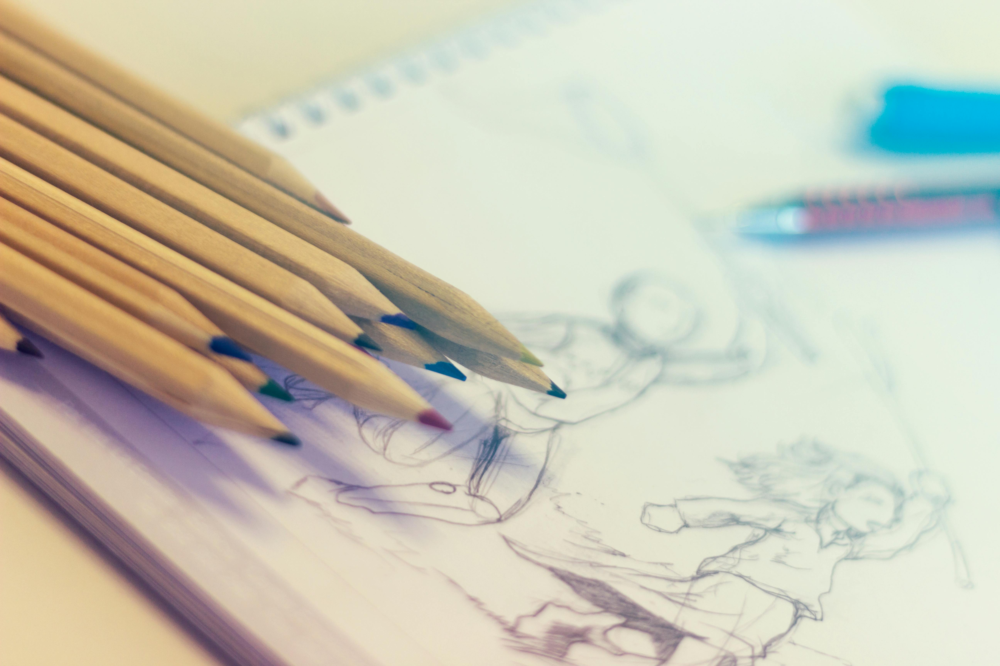

Instrumentos

Desde pequeña comencé a practicar instrumentos, principalmente la flauta transversal y un poco de piano, aunque era buena en ello, recientemente no lo he retomado, aunque me gustaría, requiero dedicarle más tiempo.
Mi nombre es Fernanda, compartiré un poco sobre algunos de mis hobbies
Desde pequeña comencé a practicar instrumentos, principalmente la flauta transversal y un poco de piano, aunque era buena en ello, recientemente no lo he retomado, aunque me gustaría, requiero dedicarle más tiempo.
En lo personal me gusta poco dibujar pero suelo hacerlo bien cuando es sobre algo que me gusta o llamada la atención, normalmente dibujo cuando tengo tiempo libre pero tiene algún fin decorativo en mi espacio personal.
